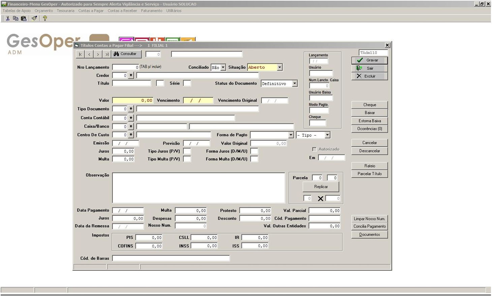

Contas a Pagar

💳 Manutenção de Títulos - Contas a Pagar
Pode ser acessado pelo seguinte caminho: GesOper >> Financeiro >> Contas a Pagar
Visão Geral
No módulo de Contas a Pagar, é possível registrar todas as informações relacionadas aos pagamentos a serem realizados aos fornecedores. Os títulos a pagar podem ser parcelados ou replicados, e também é possível realizar o lançamento de previsões de contas a pagar. Ao acessar a tela de Manutenção de Títulos, uma janela será aberta para que o usuário informe a filial para a qual o lançamento será realizado. A interface de lançamento de títulos no Contas a Pagar é semelhante à do Contas a Receber.
Processo de Lançamento de Títulos
Para realizar o lançamento de um título, é necessário informar os seguintes dados:
- Código do Credor: Identificador único do fornecedor ou credor.
- Número do Título: Número que identifica o título a ser pago.
- Série do Título: Identificador adicional que, junto com o número e o código do credor, forma uma chave única, garantindo que um credor não tenha dois títulos com o mesmo número e série.
Esses campos são obrigatórios e garantem a unicidade do título no sistema. Após preencher as informações, o usuário pode prosseguir com o registro do título para posterior processamento no fluxo de contas a pagar.
Funcionalidades
- Parcelamento de Títulos Permite dividir o valor do título em múltiplas parcelas para facilitar o pagamento.
- Replicação de Títulos Possibilita a criação de cópias de títulos para agilizar o registro de pagamentos recorrentes.
- Lançamento de Previsões Permite registrar previsões de contas a pagar, auxiliando no planejamento financeiro.
Benefícios Operacionais
⚡ Eficiência no Registro
Automatização do processo de lançamento de títulos reduz o tempo necessário para gerenciar contas a pagar.
🎯 Precisão nos Dados
A unicidade garantida pelo código do credor, número e série do título evita duplicações e erros.
📊 Planejamento Financeiro
A possibilidade de registrar previsões facilita a gestão do fluxo de caixa.